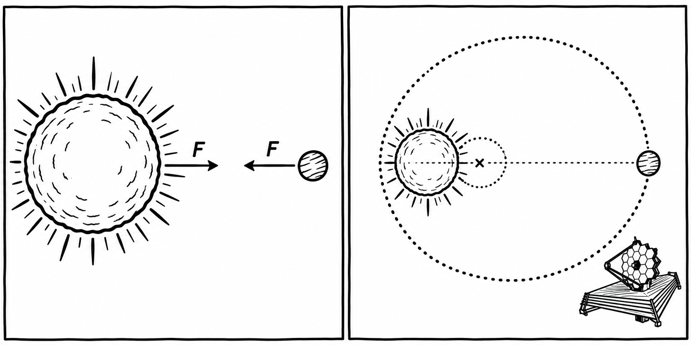

Station 5 · Anwendung im All
Exoplaneten entdecken
Ein Planet zieht an seinem Stern – und der Stern zieht genauso stark zurück.
Ein Exoplanet ist ein Planet außerhalb unseres Sonnensystems. Viele Exoplaneten sind selbst mit großen Teleskopen schwer direkt zu sehen. Ihre Wirkung auf den Stern kann aber messbar sein.

Was hat das mit Actio und Reactio zu tun?
Der Stern zieht den Planeten durch seine Gravitation an. Gleichzeitig zieht der Planet den Stern mit einer gleich großen, entgegengesetzten Kraft an. Weil der Stern viel mehr Masse hat, ändert sich seine Bewegung viel weniger. Trotzdem steht er nicht völlig still: Stern und Planet bewegen sich um einen gemeinsamen Schwerpunkt.
Wie lässt sich das messen?
Manche Sterne bewegen sich dadurch abwechselnd ein wenig auf uns zu und von uns weg. Das verändert das Licht des Sterns minimal. Forschende messen diese Veränderung im Spektrum des Sternlichts. Wiederholt sich das Muster regelmäßig, kann ein umkreisender Planet eine Erklärung sein. Diese Methode heißt Radialgeschwindigkeitsmethode.
So lässt sich ein Planet indirekt entdecken, obwohl man ihn im Teleskop vielleicht gar nicht sieht. Die Bewegung des Sterns liefert außerdem Hinweise auf den Planeten.
Mehr dazu bei NASA: How We Find and Characterize Exoplanets.